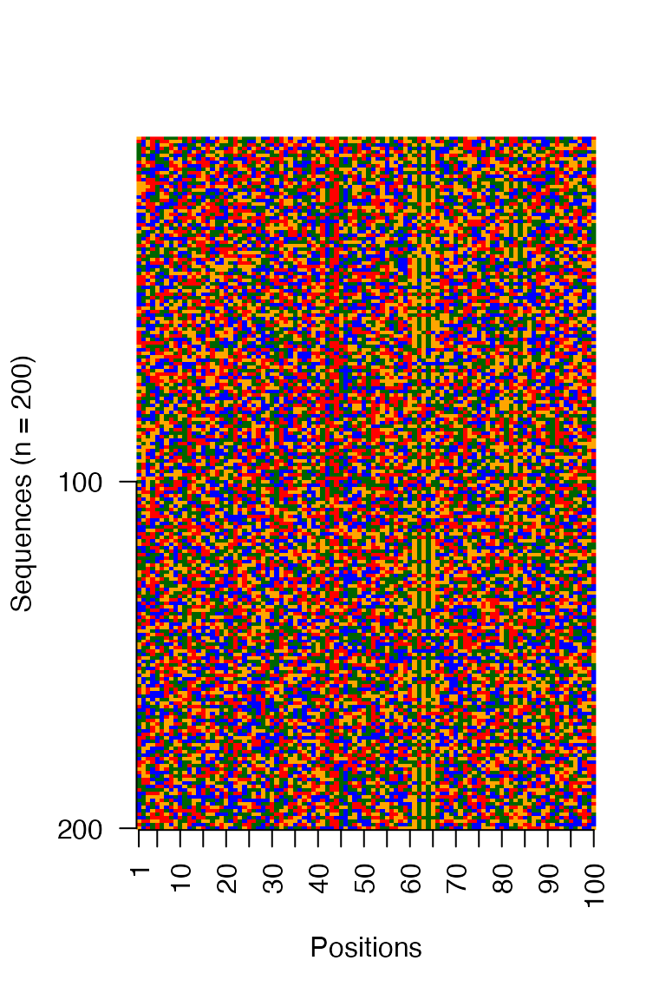

Example usage of archR on simulated DNA sequences
Sarvesh Nikumbh
2020-12-28
Source:vignettes/archR.Rmd
archR.RmdIntroduction
archR is a non-negative matrix factorization (NMF)-based unsupervised learning approach for identifying different core promoter sequence architectures. archR implements an algorithm based on chunking and iterative processing. While matrix factorization-based applications are known to scale poorly for large amounts of data, archR’s algorithm enables scalable processing of large number of sequences. A notable advantage of archR is that the sequence motifs – the lengths and positional specificities of individual motifs, and complex inter-relationships where multiple motifs are at play in tandem, all are simultaneously inferred from the data. To our knowledge, this is a novel application of NMF on biological sequence data capable of simultaneously discovering the sequence motifs and their positions. For a more detailed discussion, see preprint/publication [TODO: link here].
This vignette demonstrates archR’s usage with the help of a synthetic DNA sequences data set. Please refer to the paper (TODO: cite paper/preprint) for a detailed description of archR’s algorithm. The paper also discusses the various parameters and their settings. For completeness, the following section gives a brief overview of the algorithm.
archR’s algorithm
archR implements a chunking-based iterative procedure. Below is a schematic of archR’s algorithm.

Further details to follow.
Installation
archR is currently made available via GitHub, thus, you can use the following procedure for installing archR.
install.packages("remotes")
remotes::install_github("snikumbh/archR")
In case of any errors, please consider looking up https://github.com/snikumbh/archR. If none of the already noted points with regards to troubleshooting archR’s installation help, please file a new issue.
Working with archR
# Load archR
library(archR)
library(Biostrings, quietly = TRUE)
#>
#> Attaching package: 'BiocGenerics'
#> The following objects are masked from 'package:parallel':
#>
#> clusterApply, clusterApplyLB, clusterCall, clusterEvalQ,
#> clusterExport, clusterMap, parApply, parCapply, parLapply,
#> parLapplyLB, parRapply, parSapply, parSapplyLB
#> The following objects are masked from 'package:stats':
#>
#> IQR, mad, sd, var, xtabs
#> The following objects are masked from 'package:base':
#>
#> anyDuplicated, append, as.data.frame, basename, cbind, colnames,
#> dirname, do.call, duplicated, eval, evalq, Filter, Find, get, grep,
#> grepl, intersect, is.unsorted, lapply, Map, mapply, match, mget,
#> order, paste, pmax, pmax.int, pmin, pmin.int, Position, rank,
#> rbind, Reduce, rownames, sapply, setdiff, sort, table, tapply,
#> union, unique, unsplit, which.max, which.min
#>
#> Attaching package: 'S4Vectors'
#> The following object is masked from 'package:base':
#>
#> expand.grid
#>
#> Attaching package: 'Biostrings'
#> The following object is masked from 'package:base':
#>
#> strsplit
# Set seed for reproducibility
seed_val <- 11992288
set.seed(seed_val)Synthetic data explained
In order to demonstrate the efficacy of archR, we use archR to cluster DNA sequences in a synthetic data set which was generated as follows. A set of 200 simulated DNA sequences was generated, each 100 nucleotides long and with uniform probability for all nucleotides. These sequences have four clusters in them, each with 50 sequences. The profiles of the four clusters are:
| Cluster | Characteristic Motifs | Motif Occurrence Position | #Sequences |
|---|---|---|---|
| A | Dinucleotide repeat AT
|
every 10 nt | 50 |
| B | GATTACA |
40 | 50 |
GAGAG |
60 | ||
| C | GAGAG |
60 | 50 |
| D | GAGAG |
80 | 50 |
TCAT |
40 |
All the motifs across the clusters were planted with a mutation rate of 0.
Input and feature representation
We use one-hot encoding to represent the dinucleotide profiles of each sequence in the data set. archR provides functions to read input from (a) a FASTA file, and (b) Biostrings::DNAStringSet object.
Reading input as FASTA file
The function archR::prepare_data_from_FASTA() enables one-hot-encoding the DNA sequences in the given FASTA file. The one-hot-encoded sequences are returned as a sparse matrix with as many columns as the number of sequences in the FASTA file and (#sequences x \(4^{2}\)) rows when dinucleotide profiles is selected. The number of rows will be (#sequences x \(4\)) when mononucleotide profiles is selected. See the sinuc_or_dinuc argument.
Upon setting the logical argument rawSeq to TRUE, the function returns the raw sequences as a Biostrings::DNAStringSet object, with FALSE it returns the column-wise one-hot encoded representation as noted above. When rawSeq is TRUE, sinuc_or_dinuc argument is ignored.
# Creation of one-hot encoded data matrix from FASTA file
inputFastaFilename <- system.file("extdata", "example_data.fa",
package = "archR",
mustWork = TRUE)
# Specifying `dinuc` generates dinucleotide features
inputSeqsMat <- archR::prepare_data_from_FASTA(inputFastaFilename,
sinuc_or_dinuc = "dinuc")
#> Sequences OK,
#> Read 200 sequences
#> Generating dinucleotide profiles
inputSeqsRaw <- archR::prepare_data_from_FASTA(inputFastaFilename,
rawSeq = TRUE)
nSeqs <- length(inputSeqsRaw)
positions <- seq(1, Biostrings::width(inputSeqsRaw[1]))
sinuc <- Biostrings::DNA_BASESReading input as a DNAStringSet object
If you already have a Biostrings::DNAStringSet object, you can use the get_one_hot_encoded_seqs() function which directly accepts a DNAStringSet object.
# Creation of one-hot encoded data matrix from a DNAStringSet object
inputSeqs_direct <- archR::get_one_hot_encoded_seqs(inputSeqsRaw,
sinuc_or_dinuc = "dinuc")
#> Generating dinucleotide profiles
identical(inputSeqs_direct, inputSeqsMat)
#> [1] TRUEVisualize input sequences as an image
# Visualize the sequences in a image matrix where the DNA bases are assigned fixed
# colors
archR::viz_seqs_as_acgt_mat_from_seqs(as.character(inputSeqsRaw),
position_labels = positions,
savefilename = NULL
)
Calling archR
Setup archR configuration as follows.
# Set archR configuration
archRconfig <- archR::archRSetConfig(
parallelize = TRUE,
nCoresUse = 2,
nIterationsUse = 100,
kMin = 1,
kMax = 20,
modSelType = "stability",
tol = 10^-4,
bound = 10^-8,
innerChunkSize = 100,
flags = list(debugFlag = FALSE, timeFlag = TRUE, verboseFlag = TRUE,
plotVerboseFlag = FALSE)
)Once the configuration is setup, call the archR::archR function with user-specified iterations.
# Call/Run archR
perform_iters <- 2
archRresult <- archR::archR(config = archRconfig,
seqsMat = inputSeqsMat,
seqsRaw = inputSeqsRaw,
seqsPositions = positions,
thresholdItr = perform_iters)
#> Parallelization with 2 cores
#> Model selection by factor stability
#> Tolerance: 1e-04 & Bound: 1e-08
#> === archR to perform 2 iteration(s) ===
#> === Iteration 1, 1 chunk(s) ===
#> [Outer chunk 1/1] [Size: 200]
#> Decision: Processing
#> [Inner chunk 1/2] [Size: 100]
#> Checking K = 1
#> Checking K = 2
#> Checking K = 3
#> Checking K = 4
#> Best K for this subset: 3
#> Fetching 3 clusters
#> [Inner chunk 2/2] [Size: 100]
#> Checking K = 1
#> Checking K = 2
#> Checking K = 3
#> Checking K = 4
#> Best K for this subset: 3
#> Fetching 3 clusters
#> [Outer chunk 1/1] complete
#> [Iteration 1] complete
#> Managing clusters from outer chunk(s)
#>
#> Updating sequence cluster labels
#> #Clusters: 3
#> Iteration 1 completed in 1.19 mins
#> 1.2 mins ellapsed since start
#> === Iteration 2, 3 chunk(s) ===
#> [Outer chunk 1/3] [Size: 100]
#> Decision: Processing
#> [Inner chunk 1/1] [Size: 100]
#> Checking K = 1
#> Checking K = 2
#> Checking K = 3
#> Best K for this subset: 2
#> Fetching 2 clusters
#> [Outer chunk 1/3] complete
#> [Outer chunk 2/3] [Size: 50]
#> Decision: Processing
#> [Inner chunk 1/1] [Size: 50]
#> Checking K = 1
#> Checking K = 2
#> Best K for this subset: 1
#> Fetching 1 clusters
#> [Outer chunk 2/3] complete
#> [Outer chunk 3/3] [Size: 50]
#> Decision: Processing
#> [Inner chunk 1/1] [Size: 50]
#> Checking K = 1
#> Checking K = 2
#> Best K for this subset: 1
#> Fetching 1 clusters
#> [Outer chunk 3/3] complete
#> [Iteration 2] complete
#> Managing clusters from outer chunk(s)
#> Updating sequence cluster labels
#> #Clusters: 4
#> Iteration 2 completed in 0.969 mins
#> 2.16 mins ellapsed since start
#> No element pairs close enough by given distance threshold: 3
#> Updating sequence cluster labels
#> #Clusters: 4
#> archR exiting, 2.16 minsUnderstanding the result object from archR
In the version 0.1.3, archR naively returns a result object which is a nested list. The list elements include: 1. the sequence cluster labels per iteration [seqsClustLabels]; 2. the collection of NMF basis vectors per iteration [clustBasisVectors]: each is a list of two elements nBasisVectors and basisVectors; 3. the clustering solution, [clustSol], which is obtained upon combining raw clusters from the last iteration of archR. This element stores the clustering of NMF basis vectors [basisVectorsClust] and the sequence clusters [clusters]; 4. the raw sequences provided [rawSeqs]; 5. the configuration setting [config]; and 6. the call itself [call].
NMF basis vectors
archR stores the NMF basis vectors corresponding to each cluster in every iteration in the variable clustBasisVectors. clustBasisVectors is a numbered list corresponding to the number of iterations performed. This is then again a list holding two pieces of information: the number of basis vectors (nBasisVectors) and the basis vectors (basisVectors).
# Basis vectors at iteration 2
archRresult$clustBasisVectors[[2]]$nBasisVectors
#> [1] 4
dim(archRresult$clustBasisVectors[[2]]$basisVectors)
#> [1] 1600 4
head(archRresult$clustBasisVectors[[2]]$basisVectors)
#> [,1] [,2] [,3] [,4]
#> [1,] 0.120738792 0.07407943 0.05168607 0.08186580
#> [2,] 0.087064002 0.08679650 0.02486037 0.07917296
#> [3,] 0.080387155 0.03793825 0.05076204 0.05196331
#> [4,] 0.074604999 0.04276979 0.09945618 0.05334238
#> [5,] 0.080342833 0.11748608 0.07484865 0.10758754
#> [6,] 0.007200647 0.11873504 0.05051104 0.10543655Visualize results from archR
In this section we demonstrate how to visualize results from archR. One can visualize the NMF basis vectors as well as the sequence clusters.
The clustered output from archR can again be visualized as a matrix. Simply sort the sequences based on the cluster labels assigned to them and call archR::viz_seqs_as_acgt_mat_from_seqs with the sorted order as shown.
itr <- 1
seqsClustLabels <- archRresult$seqsClustLabels[[itr]]
sorted_order <- sort(seqsClustLabels, index.return = TRUE)
archR::viz_seqs_as_acgt_mat_from_seqs(as.character(inputSeqsRaw[sorted_order$ix]),
position_labels = positions,
savefilename = NULL)Figure: Clusters at iteration 1
itr <- 2
seqsClustLabels <- archRresult$seqsClustLabels[[itr]]
sorted_order <- sort(seqsClustLabels, index.return = TRUE)
archR::viz_seqs_as_acgt_mat_from_seqs(as.character(inputSeqsRaw[sorted_order$ix]),
position_labels = positions,
savefilename = NULL)Figure: Clusters at iteration 2
Conclusion
archR can detect de novo sequence features and simultaneously identify the complex interactions of different features together with their positional specificities.
Note that the sequence architectures identified by archR have no limitations due to the size of the motifs or gaps in them, distance between motifs, compositional and positional variations in the individual motifs and their effects on the complex interactions, and number of motifs involved in any interaction.
Session Info
sessionInfo()
#> R version 4.0.3 (2020-10-10)
#> Platform: x86_64-apple-darwin17.0 (64-bit)
#> Running under: macOS Catalina 10.15.7
#>
#> Matrix products: default
#> BLAS: /Library/Frameworks/R.framework/Versions/4.0/Resources/lib/libRblas.dylib
#> LAPACK: /Library/Frameworks/R.framework/Versions/4.0/Resources/lib/libRlapack.dylib
#>
#> locale:
#> [1] en_US.UTF-8/en_US.UTF-8/en_US.UTF-8/C/en_US.UTF-8/en_US.UTF-8
#>
#> attached base packages:
#> [1] stats4 parallel stats graphics grDevices utils datasets
#> [8] methods base
#>
#> other attached packages:
#> [1] Biobase_2.50.0 Biostrings_2.58.0 XVector_0.30.0
#> [4] IRanges_2.24.1 S4Vectors_0.28.1 BiocGenerics_0.36.0
#> [7] archR_0.1.3
#>
#> loaded via a namespace (and not attached):
#> [1] colorspace_2.0-0 ellipsis_0.3.1
#> [3] class_7.3-17 modeltools_0.2-23
#> [5] mclust_5.4.7 rprojroot_2.0.2
#> [7] GenomicRanges_1.42.0 fs_1.5.0
#> [9] flexmix_2.3-17 bit64_4.0.5
#> [11] AnnotationDbi_1.52.0 R.methodsS3_1.8.1
#> [13] codetools_0.2-16 doParallel_1.0.16
#> [15] robustbase_0.93-6 knitr_1.30
#> [17] hopach_2.50.0 jsonlite_1.7.2
#> [19] Rsamtools_2.6.0 seqLogo_1.56.0
#> [21] gridBase_0.4-7 annotate_1.68.0
#> [23] GO.db_3.12.1 cluster_2.1.0
#> [25] kernlab_0.9-29 png_0.1-7
#> [27] R.oo_1.24.0 readr_1.4.0
#> [29] compiler_4.0.3 httr_1.4.2
#> [31] assertthat_0.2.1 Matrix_1.2-18
#> [33] htmltools_0.5.0 tools_4.0.3
#> [35] gtable_0.3.0 glue_1.4.2
#> [37] TFMPvalue_0.0.8 GenomeInfoDbData_1.2.4
#> [39] reshape2_1.4.4 dplyr_1.0.2
#> [41] Rcpp_1.0.5 pkgdown_1.6.1
#> [43] NMF_0.23.0 vctrs_0.3.6
#> [45] rtracklayer_1.50.0 iterators_1.0.13
#> [47] fpc_2.2-9 ggseqlogo_0.1
#> [49] xfun_0.19 CNEr_1.26.0
#> [51] stringr_1.4.0 lifecycle_0.2.0
#> [53] poweRlaw_0.70.6 rngtools_1.5
#> [55] gtools_3.8.2 XML_3.99-0.5
#> [57] DEoptimR_1.0-8 zlibbioc_1.36.0
#> [59] MASS_7.3-53 scales_1.1.1
#> [61] BSgenome_1.58.0 ragg_0.4.0
#> [63] hms_0.5.3 MatrixGenerics_1.2.0
#> [65] SummarizedExperiment_1.20.0 RColorBrewer_1.1-2
#> [67] yaml_2.2.1 memoise_1.1.0
#> [69] reticulate_1.18-9000 ggplot2_3.3.2
#> [71] pkgmaker_0.32.2 stringi_1.5.3
#> [73] RSQLite_2.2.1 highr_0.8
#> [75] desc_1.2.0 foreach_1.5.1
#> [77] caTools_1.18.0 BiocParallel_1.24.1
#> [79] GenomeInfoDb_1.26.2 rlang_0.4.9
#> [81] pkgconfig_2.0.3 systemfonts_0.3.2
#> [83] prabclus_2.3-2 bitops_1.0-6
#> [85] matrixStats_0.57.0 pracma_2.2.9
#> [87] evaluate_0.14 lattice_0.20-41
#> [89] purrr_0.3.4 GenomicAlignments_1.26.0
#> [91] bit_4.0.4 tidyselect_1.1.0
#> [93] plyr_1.8.6 magrittr_2.0.1
#> [95] R6_2.5.0 generics_0.1.0
#> [97] DelayedArray_0.16.0 DBI_1.1.0
#> [99] pillar_1.4.7 withr_2.3.0
#> [101] KEGGREST_1.30.1 RCurl_1.98-1.2
#> [103] nnet_7.3-14 tibble_3.0.4
#> [105] crayon_1.3.4 rmarkdown_2.6
#> [107] TFBSTools_1.28.0 grid_4.0.3
#> [109] blob_1.2.1 digest_0.6.27
#> [111] diptest_0.75-7 xtable_1.8-4
#> [113] R.utils_2.10.1 textshaping_0.2.1
#> [115] munsell_0.5.0 DirichletMultinomial_1.32.0
#> [117] registry_0.5-1